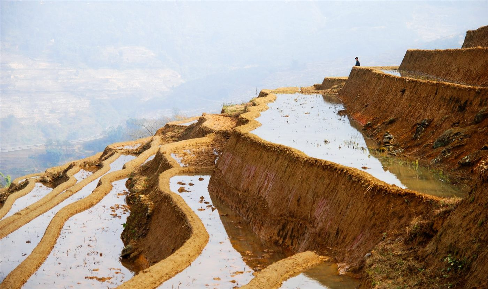

중국 국무원, 제4차 전국 농업조사 실시 통지
중국 국무원이 제4차 전국 농업조사를 실시한다는 통지를 인쇄·발부했다. 농업 생산과 농촌 실태를 전수 조사하는 십년 단위 통계 사업이다.
손승종 기자 · 2026.09.05
橋중국

중국 국무원이 '제4차 전국 농업조사 실시에 관한 통지'를 인쇄·발부했다. 전국 농업조사는 농업 생산 구조와 농촌 실태를 파악하기 위해 십년 주기로 진행되는 대규모 통계 사업이다.
광고 문의 · 300×250조사는 경작지 이용, 농업 기계화 수준, 농가 구성, 농촌 기반시설 등 광범위한 항목을 포괄한다. 표본조사가 아니라 전수 방식으로 이뤄지는 부분이 있어, 준비 기간과 인력 동원 규모가 크다.
이런 조사 결과는 이후 수년간의 농업 정책 설계에 기초 자료로 쓰인다. 곡물 생산 목표, 농지 보전 기준, 농촌 지원 사업의 배분이 모두 이 통계를 참조한다.
중국의 농업 통계는 국제 곡물 시장에서도 참고 지표로 쓰인다. 세계 최대 규모의 소비국이자 주요 수입국이기 때문에, 생산 능력에 관한 갱신된 수치는 국제 가격 전망에 반영된다.
조사에는 통상 준비, 현장 등록, 자료 처리, 결과 공표의 단계가 있다. 통지 발부는 첫 단계에 해당하며, 실제 현장 조사와 결과 공표까지는 상당한 시차가 있다.
식자재를 다루는 재한 화인 상인에게는 중장기 참고 자료다. 곡물과 채소의 산지 구조 변화는 몇 해에 걸쳐 수입 단가와 품목 구성에 나타난다.
출처·참고 (사실 확인용 — 본문은 직접 재작성)
· http://www.people.com.cn/
· http://www.people.com.cn/